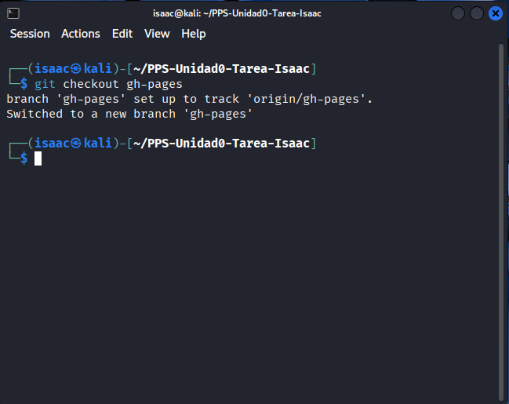

Documentación MkDocs con Docker y NGINX
En este apartado se explica cómo desplegar un servidor web local utilizando Docker y la imagen oficial de NGINX para publicar la documentación estática generada previamente con MkDocs. Para ello se emplea un Bind Mount, que permite a NGINX acceder directamente a los archivos ubicados en el sistema anfitrión.
1. Preparación del Entorno y Ejecución
La documentación generada por MkDocs se guarda en la rama gh-pages. Antes de lanzar el contenedor, es necesario situarse en dicho branch para asegurar que NGINX sirve los archivos adecuados.
cd PPS-Unidad0-Tarea-$Tunombre
git checkout gh-pages

2. Crear el contenido NGINX con Bind Mount
Se lanza el contenedor asignándole un nombre, mapeando el puerto 8085 hacia el puerto 80 interno y montando el directorio actual como carpeta raíz del servidor web.
docker run -d \
--name PPSUnidad0-Tarea_$tunombre \
-p 8085:80 \
-v "$(pwd)":/usr/share/nginx/html \
nginx:latest

3. Contenedor en ejecucion
Con el comando deberia de aparecer el contenedor en ejecucion
docker ps
4. Pagina generada